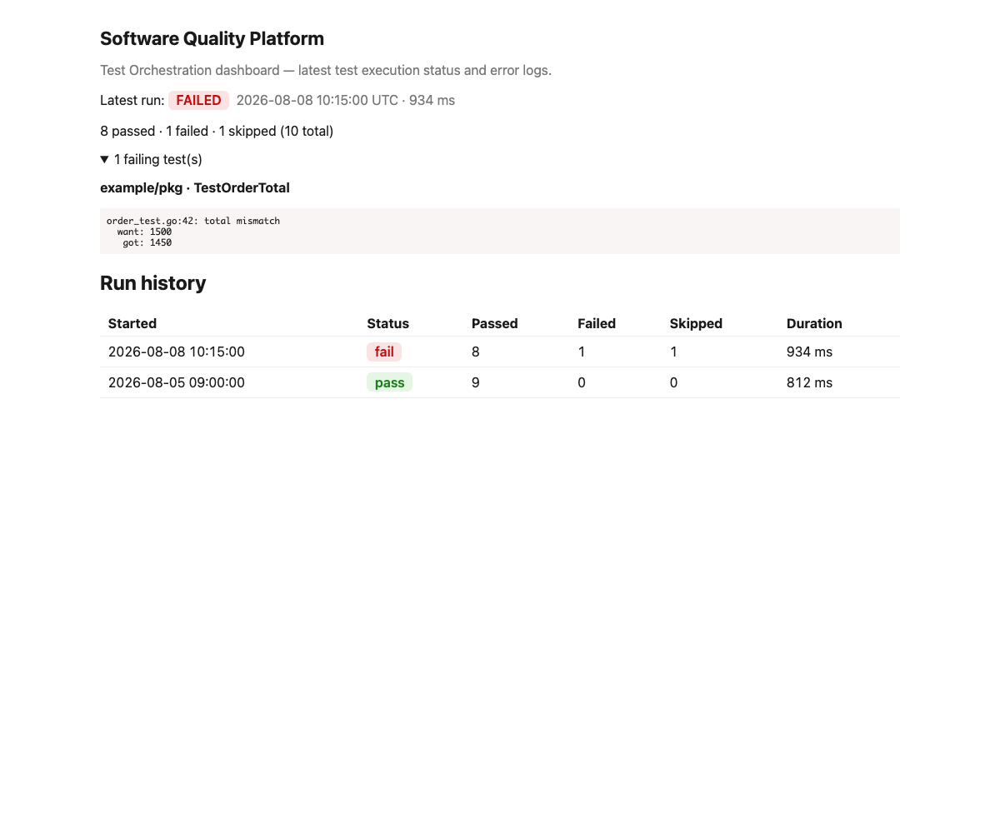
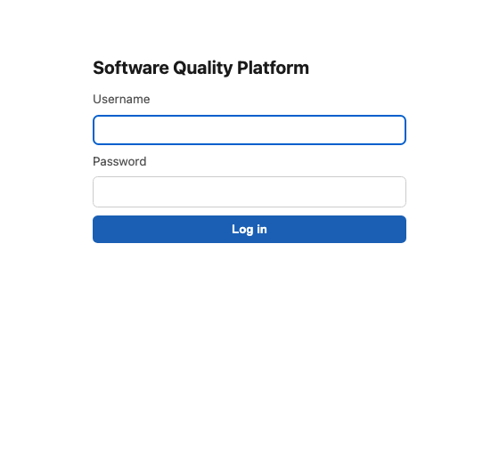

Software Quality Platform
A Go, standard-library-only backend that gives small development teams one place to trigger automated tests, see results, and track quality over time.
Overview
Testing infrastructure sized for small teams
Small development teams often skip continuous testing infrastructure because the standard tooling is built for large organizations. This capstone project asks a narrower question: what does a quality platform look like when it's built for a team of two to five people, with no dedicated DevOps role and no budget for a managed platform?
Who it's for
Developers and QA members on a small team who want a single, self-hosted view of test status without adopting a large external SaaS product.
What it does
Authenticates users, runs a project's Go test suite on demand, stores every run's result, and renders a dashboard of current status and history.
How it's built
Four cooperating modules — authentication, test orchestration, reporting, and a small file-based data layer — behind one HTTP server.
Technical
Four layers, one process
The system follows a layered architecture — UI, application services, data, and external integrations — with every module exposed as its own Go package under /internal, so each one is independently testable and swappable.
internal/web
A net/http + html/template dashboard. /login serves both an HTML form and a JSON API from one handler; /report and /api/runs expose the same data as JSON.
internal/auth
Salted PBKDF2-HMAC-SHA256 hashing (210,000 iterations), constant-time comparison, and identical failure responses so a login attempt never reveals whether a username exists.
internal/orchestration
Runs go test -json against a target repository and parses the event stream into a structured, storable result — thin glue over the Go toolchain, not a competing test framework.
internal/reporting
Summarizes test outcomes into total, passed, failed, and pass-rate figures, with a safe "0%" for an empty set rather than a divide-by-zero.
internal/store
Persists each run as its own timestamped JSON file with atomic write-then-rename. Swappable for PostgreSQL later without touching the layers around it.
internal/config
Reads configuration from the environment (optionally seeded from .env), so the same binary runs the same way in development, CI, and a container.
Standard library only
go.mod has no require block. No framework, no ORM, no third-party router — routing, templating, hashing, and JSON all come from the Go standard library.
Security by default
Passwords are never compared as plain text or stored unhashed. Every failed login looks identical whether the account exists or not.
Documentation
Design artifacts and requirements
Every design decision below is version-controlled alongside the code it describes, so the documentation and the implementation can never drift far apart.
Results
Measured, not assumed
Every number below comes from cmd/loadtest, a small tool built for this project that sends real HTTP requests to a running instance — not an in-process function call — so the results reflect the full request path.
| Endpoint | Latency (p50) | Throughput | Why |
|---|---|---|---|
/report |
52µs | 17,169 req/s | In-memory summarization only |
/login |
19.3ms | 313 req/s | 210,000-round PBKDF2 hash, by design |

html/template.
A persistently hosted, live instance of the running application is planned but not yet deployed — GitHub Pages hosts this portfolio as a static site only. In the meantime, the Docker image documented in the README runs the full application locally in under a minute:
docker build -t sqp . && docker run -p 8080:8080 sqp.